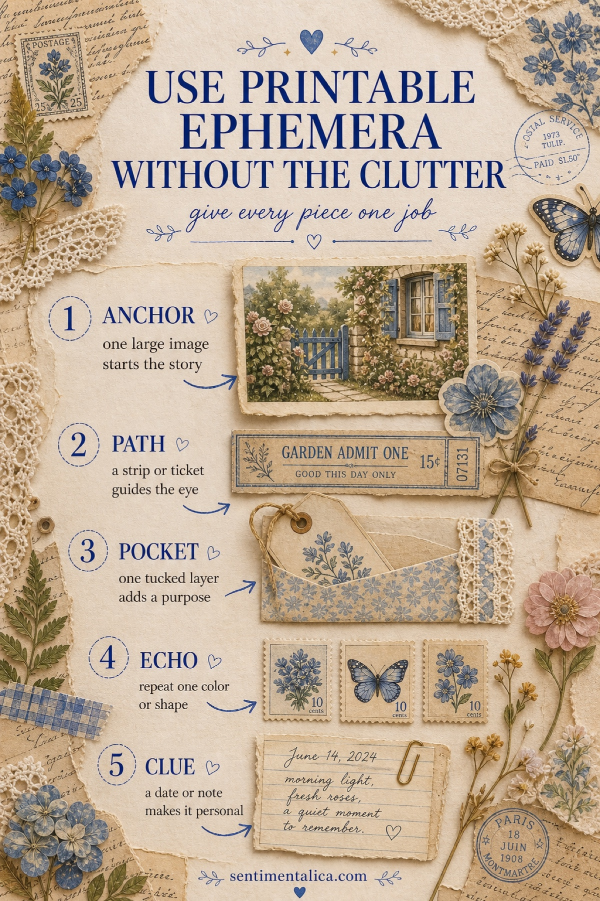
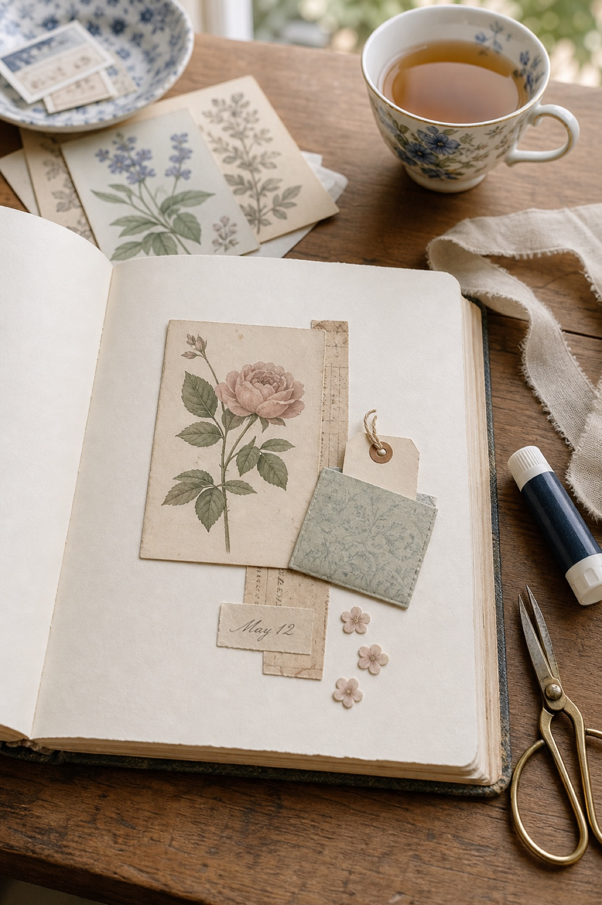
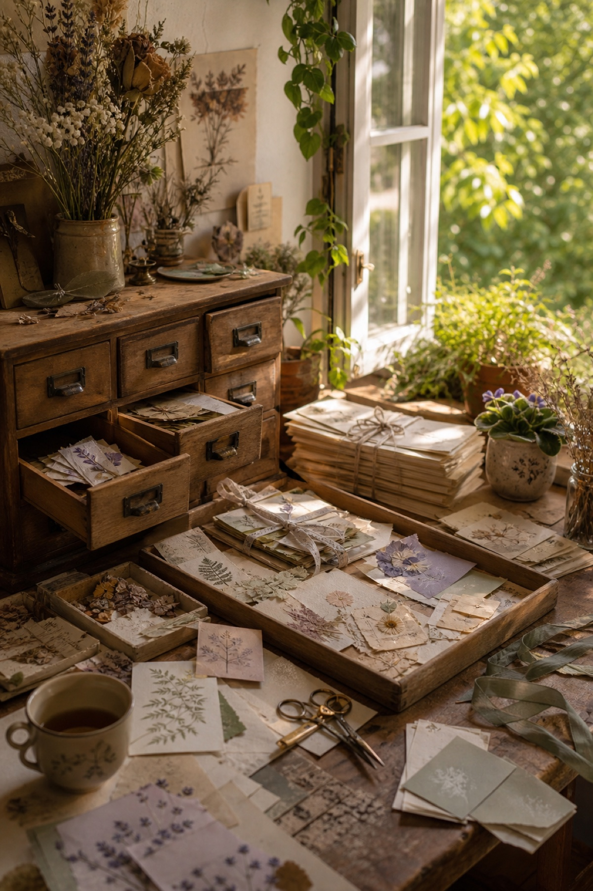
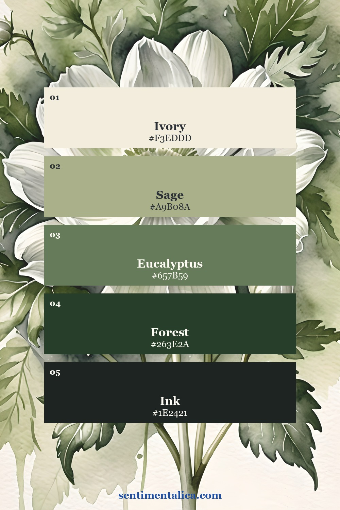
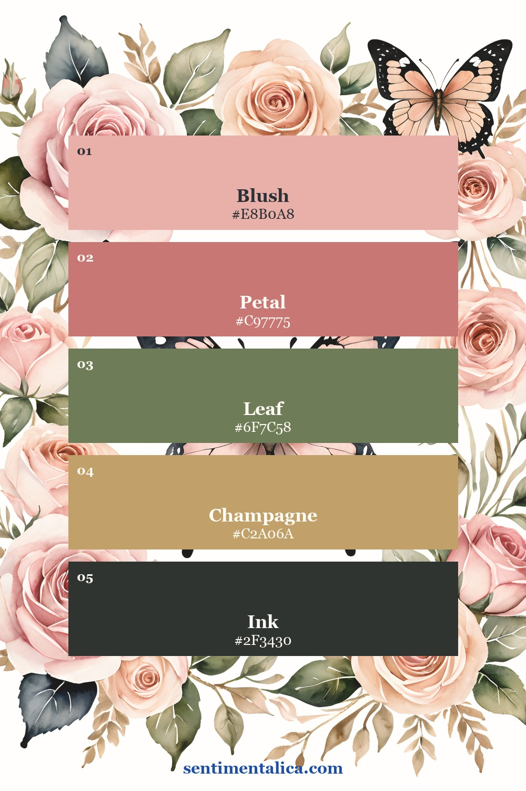
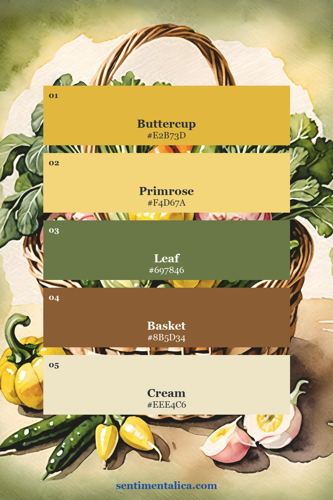
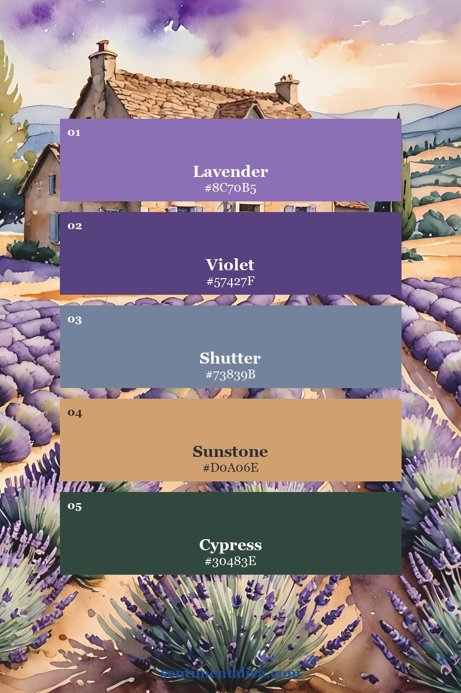
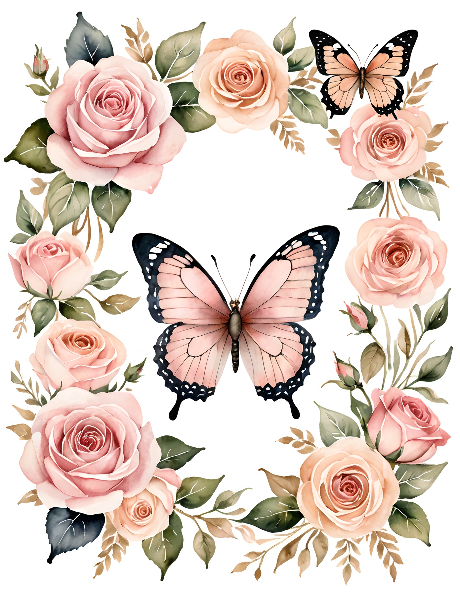
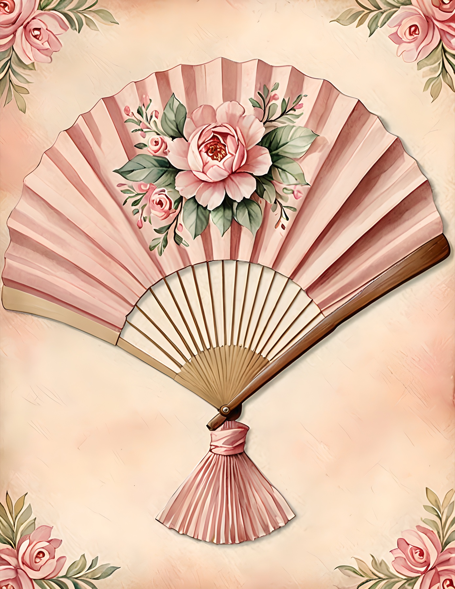
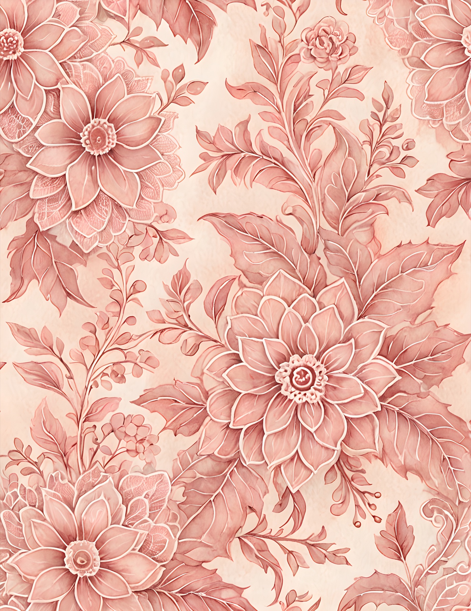

Printable ephemera makes a journal page feel collected: a botanical card, a ticket, a label, a tiny note. The trouble begins when every lovely piece asks to be the star. Instead of removing all the detail, give each piece a different job. You will keep the richness while creating a page the eye can understand.

First, decide what the page is about
Before cutting anything, finish this sentence: “This page is about…” It might be a quiet garden morning, a trip to Provence, the first primrose of spring, or simply the color sage. That small decision creates a filter. If a piece does not support the sentence, it can wait for another page.
Clutter is not the same as abundance. A page can hold many details and still feel calm when one image leads, smaller pieces support it, and some paper remains visible. The real problem is equal emphasis: five medium-size pictures, five strong colors, or five messages competing at once.
Give every piece one of five jobs
1. Anchor. Choose one larger image first. A flower, portrait, house, or landscape can carry the main feeling. Place it slightly away from the center so the composition has movement.
2. Path. Add one narrow element that directs the eye toward the anchor. A ticket, ribbon, strip of book paper, stem, or line of handwriting works beautifully. It should connect the composition rather than become a second focal point.
3. Pocket. Let one layer do something useful. A folded scrap can hold a tag, a small envelope can keep a note, or a corner tuck can hide a date. Function makes layering feel intentional.
4. Echo. Repeat one small thing two or three times: the blush of a rose, a circular stamp shape, a blue edge, or a tiny leaf. Repetition tells the eye that the pieces belong together. Stop before the echo becomes a pattern competing with the anchor.
5. Clue. Finish with one personal sign: a date, place name, one-sentence memory, postage mark, or tiny handwritten observation. This is the detail that changes a decorative arrangement into a page with a story.

Use the pause test before you glue
Arrange the pieces without adhesive, then step back or photograph the page with your phone. Where does your eye land first? If the answer is “everywhere,” remove the most attention-seeking supporting piece. If the page feels disconnected, move the path so it touches or points toward the anchor. If it feels flat, add a pocket or lift one edge with a small foam square.
Then leave at least one generous area of quiet paper. Breathing room is not unfinished space; it is what allows texture, handwriting, and color to be noticed.

Choose one visual world, not four at once
A coordinated collection makes the five-job method easier because the colors and subjects already speak to one another. Sage and ivory feel quiet and botanical; blush roses feel romantic; primrose yellow brings cottage warmth; lavender and sunstone suggest a French summer. Pick one world for the page, then use the palette as a limit rather than a shopping list.




If you want to practise before choosing a full collection, begin with the 100 free floral pictures. Print one sheet, choose a single anchor, and build only the four supporting jobs around it.
See how one collection can still offer variety
These authentic Pastel Dusk pages move from a rose-and-butterfly frame to a floral fan and a quiet all-over pattern, yet the blush, leaf green, and antique cream keep them connected. On one spread, use only one as the anchor source. Save the others for a background strip, a pocket, or a later page.



The goal is not to fit more ephemera onto the page. It is to make every chosen piece earn its place. Start with the anchor, follow the path, add one useful layer, repeat one quiet detail, and leave a clue only you could have written.